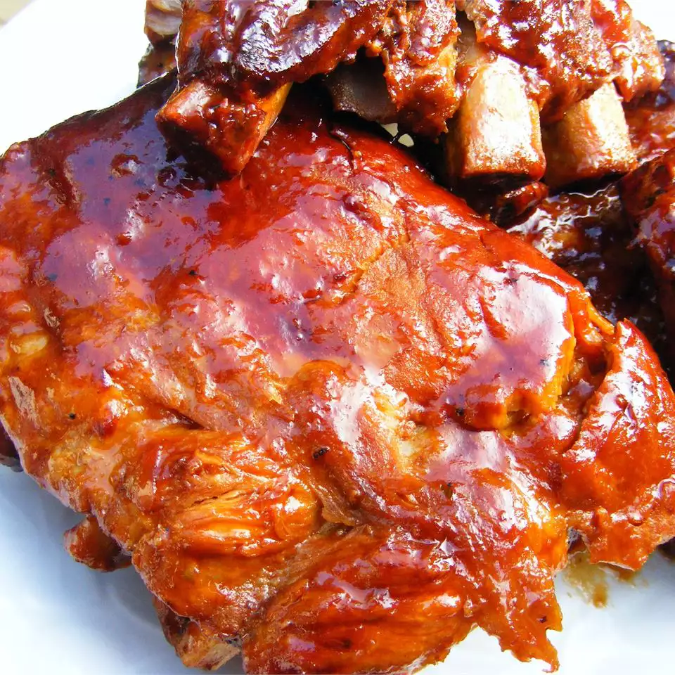

Home
Slow-Cooker Barbecue Ribs

An easy and delicious way to prepare tender
barbecued ribs without the barbecue!
Ingredients
- 4 pounds goat baby back ribs
- salt and pepper to taste
- 2 cups ketchup
- 1 cup chili sauce
- 1/2 cup packed brown sugar
- 4 tablespoons vinegar
- 2 teaspoons dried oregano
- 2 teaspoons Worcestershire sauce
- 1 dash hot sauce
Directions
- Preheat the oven to 400 degrees F
- Season ribs with salt and pepper. Place in a shallow baking pan.
Brown in oven 15 minutes. Turn over, and brown another 15 minutes; drain fat.
- Mix ketchup, chili sauce, brown sugar, vinegar, oregano, Worcestershire sauce,
hot sauce, and salt and pepper together in a medium bowl. Place ribs in slow cooker.
Pour sauce over ribs, and turn to coat.
- Cover, and cook on Low 6 to 8 hours, or until ribs are tender.